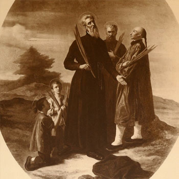

Isusovački blaženici
Svećenik
Bl. Kamil Costanzo
1571. – 1622.
Talijanski isusovac evangelizirao je u Japanu, u izgnanstvu proučavao budističke tekstove, a nakon povratka u misiju uhićen je i osuđen na spaljivanje.
Tekst je preveden i prilagođen uz pomoć umjetne inteligencije.

Izvor slike
- Spomendan
- 15. rujna
- Zaštitništvo
- Nije navedeno u izvoru
- Životni vijek
- 1571. – 1622.
- Djelovanje
- Misije i evangelizacija · Pisanje, znanost i umjetnost · Progoni i progonstvo · Mučeništvo
- Razdoblje
- 16., 17. stoljeće
- Podrijetlo
- Kalabrija, Italija
- Ulazak u Družbu
- 1591.
- Rođenje — dostupni podaci
- 1571.; dan i mjesec nisu potvrđeni u provjerenom izvoru.
- Mjesto rođenja
- Kalabrija, Italija
- Datum smrti
- 15.09.1622.
- Mjesto smrti/mučeništva
- Hirado, Japan
- Okolnosti smrti/mučeništva
- Spaljen na lomači zbog misionarskoga djelovanja za progona kršćana.
- Uloga
- Svećenik
- Mučenik
- Da
- Ostale oznake
- Misionar u Japanu; djelovao u Sakaiu
- Pripadnost
- Isusovac
- Drugi oblici imena
- Kamilo Costanzo · Camillus Costanzo · Camillus · Camillo Costanzo
Životopis
Kamilo Costanzo rođen je 1571. u Kalabriji. Bio je vojnik i student prava prije ulaska u napuljsku provinciju Družbe Isusove 1591. Određen za Kinu, zbog portugalskoga protivljenja nije mogao ostvariti taj plan. Umjesto toga otišao je u Japan, naučio jezik i služio u Sakaiju i okolici, gdje su mnogi prihvatili kršćanstvo.
Nakon protjerivanja šest je godina boravio u Macau. To vrijeme posvetio je proučavanju budističkih spisa i pisanju na japanskom jeziku. Krajem 1621. vratio se u Japan prerušen u vojnika. Brodski ga je kapetan prepoznao kao misionara, ali je ipak izbjegao neposredno uhićenje. Misijsko mu je područje postao otok Hirado.
Povijesni okvir takva povratka bila je zabrana misija i pojačana kontrola brodova. Campbellova povijest izričito ubraja Costanza među misionare koji su se vratili pod krinkom trgovaca ili vojnika. Ti podatci objašnjavaju opasnost puta, a ne neku vojnu zadaću u njegovu novom poslanju.
Dojava doušnika dovela je do uhićenja 24. travnja 1622. Osuđen je na spaljivanje i poginuo 15. rujna. Njegova priprava za službu uključivala je i iskustvo progonstva, učenje i pisani rad za japanske čitatelje.
Tekst je preveden i prilagođen uz pomoć umjetne inteligencije.
Pročitaj više na izvornoj stranici ↗